General
Stardew Valley es un videojuego indie de simulación de granja desarrollado por Eric "ConcernedApe" Barone y publicado por Chucklefish Games (actualmente por ConcernedApe). El juego se lanzó en primer lugar para Windows el 26 de febrero de 2016, y luego para los sistemas operativos OS X y Linux.
En Stardew Valley, el jugador toma el rol de un personaje que se encuentra atrapado en un trabajo de oficina y para escapar de él se va a vivir a la granja de su abuelo, la cual se encuentra en ruinas. La granja se encuentra ubicada en un lugar llamado Pueblo Pelícano. El jugador controla las acciones del personaje, utilizando energía al realizar acciones como regar los cultivos o minar, entre muchos otros. El tiempo y la energía utilizada para realizar las acciones dependiendo del nivel que el personaje cuente en dichas actividades, las cuales aumentan con el tiempo al repetir la tarea una y otra vez.
El juego también cuenta con un carácter social al poder relacionarse con los vecinos del lugar y lograr entablar una amistad e, incluso, contraer matrimonio con algunos de los personajes solteros del juego.
Disponible en
Aldeanos
Alex
Un joven atlético y algo arrogante que sueña con convertirse en jugador profesional de gridball. Vive con sus abuelos, George y Evelyn, y pasa gran parte de su tiempo entrenando.

Elliott
Un escritor romántico y poético que vive solo en una cabaña en la playa. Sueña con escribir una gran novela y tiene un gran aprecio por las cosas bellas de la vida.
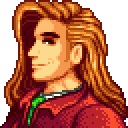
Harvey
El médico del pueblo. Es un hombre amable, algo ansioso y de buen corazón que se preocupa mucho por la salud de los vecinos y tiene una gran pasión por los aviones.

Sam
Un chico extrovertido, enérgico y amante de la música que toca la guitarra y sueña con formar una banda exitosa junto a su mejor amigo, Sebastian.

Sebastian
Un programador rebelde e introvertido que pasa la mayor parte del tiempo en su habitación del sótano. Le gustan los videojuegos, los cómics y pasear en su motocicleta.

Shane
Un hombre reservado y a menudo malhumorado que trabaja en MercaJoja. Aunque al principio parece distante y lucha contra la depresión, esconde un lado muy tierno y adora a las gallinas.

Abigail
Una chica alternativa, aventurera y con un gran interés por lo oculto y los videojuegos. Vive en la tienda local con sus padres, Pierre y Caroline, con quienes suele chocar por su estilo de vida.

Emily
Una joven alegre, espiritual y excéntrica que trabaja en el Salón Fruta Estelar. Le encanta confeccionar su propia ropa, los cristales y conectar con la naturaleza.

Haley
Al principio parece superficial, egocéntrica y obsesionada con la moda, pero con el tiempo demuestra tener un corazón amable y desarrolla una gran pasión por la fotografía.
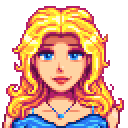
Leah
Una artista talentosa que vive en una pequeña cabaña cerca del bosque. Ama la naturaleza, recolectar alimentos silvestres y esculpir madera y piedra.
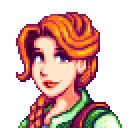
Maru
Una joven muy inteligente y curiosa que trabaja como enfermera en la clínica del pueblo y pasa su tiempo libre construyendo inventos y observando las estrellas.
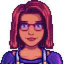
Penny
Una chica dulce, tímida y dedicada a la lectura que vive en una caravana con su madre, Pam. Trabaja como tutora de los niños del pueblo, Jas y Vincent.

Caroline
La esposa de Pierre y madre de Abigail. Es una mujer amable y tranquila que disfruta de la jardinería, el té y de organizar clases de aeróbic con las vecinas.
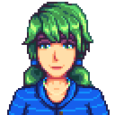
Clint
El herrero del pueblo. Es un hombre tímido, trabajador y algo inseguro que pasa sus días frente a la forja mejorando herramientas y abriendo geodas.
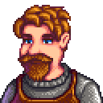
Demetrius
Un científico que estudia la fauna y flora local. Es el esposo de Robin, padre de Maru y padrastro de Sebastian, y tiene una personalidad muy analítica.
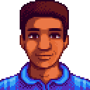
Enano
Un misterioso comerciante que vive oculto en las minas. Aunque es amigable, no comprende del todo las costumbres de los humanos y vende objetos útiles para la minería.
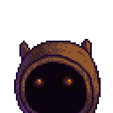
Evelyn
Una anciana dulce y cariñosa que cuida los jardines públicos de Pueblo Pelícano. Vive con su esposo George y su nieto Alex, y le encanta hornear galletas.
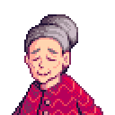
George
Un anciano gruñón que usa silla de ruedas tras un accidente en las minas hace años. Aunque parece amargado, en el fondo se preocupa profundamente por su familia.
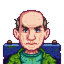
Gus
El generoso y amigable dueño y cocinero del Salón Fruta Estelar. Es un excelente chef que siempre está dispuesto a ayudar a cualquier vecino que lo necesite.
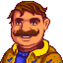
Jas
Una niña tímida y educada que vive en el rancho con su tía Marnie y su padrino Shane. Le gusta saltar a la cuerda y aprender junto a su amigo Vincent.
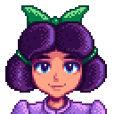
Jodi
Una madre dedicada y hogareña que cuida de sus hijos Sam y Vincent mientras su esposo Kent está fuera en el ejército. Suele preocuparse por las tareas del hogar.
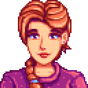
Kent
El esposo de Jodi y padre de Sam y Vincent. Es un soldado que regresa al pueblo en el segundo año tras la guerra, luchando por adaptarse de nuevo a la vida tranquila.
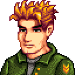
Krobus
Un amable monstruo de las sombras que vive en las cloacas y vende objetos raros. Es pacífico, le gusta el silencio y puede llegar a convertirse en compañero de piso del jugador.
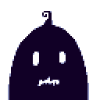
Leo
Un niño que creció criado por loros en la Isla Jengibre tras perder a sus padres en un naufragio. Con el tiempo, logra integrarse y hacer amigos en Pueblo Pelícano.
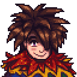
Lewis
El alcalde de Pueblo Pelícano desde hace más de veinte años. Se encarga de recoger los envíos de la granja y de organizar los festivales locales.

Linus
Un hombre sabio y pacífico que vive en una tienda de campaña en las montañas por elección propia. Ama la naturaleza y vive en armonía con el entorno.
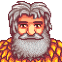
Marnie
La alegre y trabajadora dueña del rancho al sur de la granja. Vende animales y suministros ganaderos, y cuida de su sobrina Jas y de Shane.
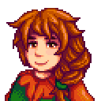
Pam
La madre de Penny y la conductora del autobús del pueblo. Es una mujer directa y algo ruda que pasa sus noches en el Salón, pero quiere mucho a su hija.
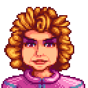
Pierre
El dueño de la tienda local de Pueblo Pelícano. Es un comerciante ambicioso y competitivo que lucha por mantener su negocio a flote frente a MercaJoja.
Robin
La carpintera del pueblo, una mujer amable, trabajadora y llena de energía. Vive en las montañas con su familia y se encarga de construir y mejorar los edificios de la granja.
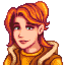
Sandy
La simpática dueña del Oasis, una tienda ubicada en el Desierto de Calico. Es la mejor amiga de Emily y disfruta vendiendo semillas exóticas.
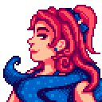
Vincent
Un niño travieso, enérgico y curioso que admira mucho a su hermano mayor, Sam. Le encantan los bichos, los dulces y jugar con su amiga Jas.
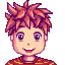
Willy
Un pescador veterano y apasionado que regenta la tienda de pesca en el muelle de la playa. Siempre está dispuesto a enseñar el arte de la pesca.
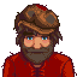
Mago (M. Rasmodius)
Un misterioso hechicero que vive en una torre al oeste del bosque. Estudia la magia elemental, el lenguaje de los Junimos y los secretos arcanos del valle.
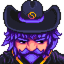
Cultivos
En Stardew Valley, la agricultura es una de las principales formas de conseguir dinero y recursos. El jugador puede comprar semillas, plantarlas, regarlas diariamente y cosecharlas cuando maduran. Cada cultivo tiene una estación específica en la que puede crecer, por lo que es importante organizar las plantaciones según el calendario.
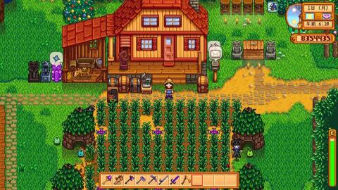
Primavera
Es la primera estación del año. Se pueden cultivar chirivías, papas, coliflores, judías verdes y fresas. También es una buena época para recolectar flores y plantas silvestres.
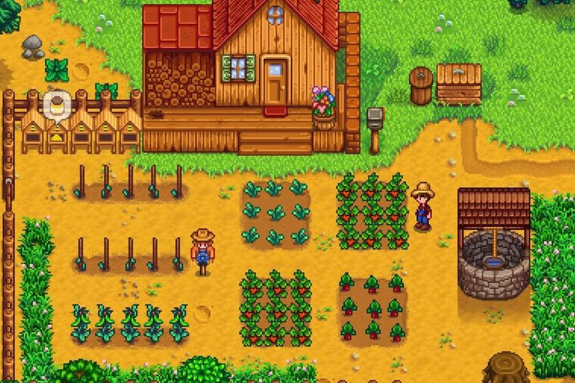
Verano
Durante esta estación se pueden cultivar arándanos, melones, tomates, maíz y carambolas. También aparecen frutas y otros recursos naturales para recolectar.
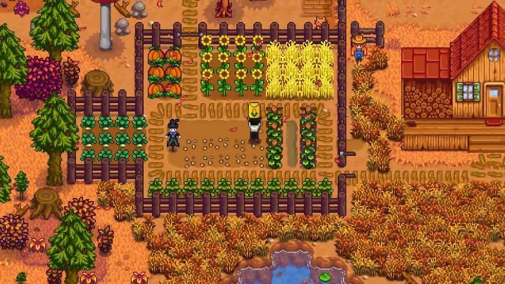
Otoño
Es una estación con cultivos muy rentables, como calabazas, arándanos rojos, berenjenas, uvas y batatas. También se pueden encontrar hongos y otros objetos silvestres.
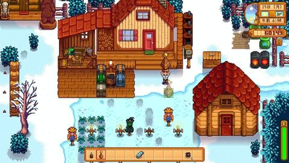
Invierno
La mayoría de los cultivos no pueden crecer debido al frío. Sin embargo, se pueden cultivar melones de polvo y utilizar semillas silvestres de invierno. Es una buena época para dedicarse a la minería, la pesca y otras actividades.
Actividades
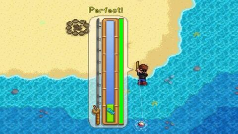
Pesca
Permite capturar peces en ríos, lagos y océanos. Las especies disponibles dependen de la ubicación, la estación y el clima.
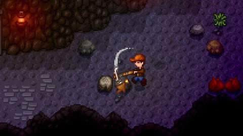
Minería
Consiste en explorar minas, romper rocas y obtener minerales, gemas y otros materiales útiles para fabricar objetos y mejorar herramientas.
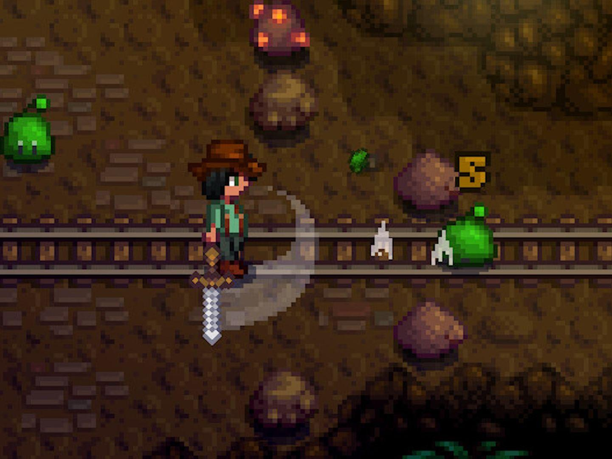
Combate
Permite enfrentarse a monstruos que habitan en las minas y otras zonas. Se utilizan armas para derrotarlos y conseguir recursos y recompensas.
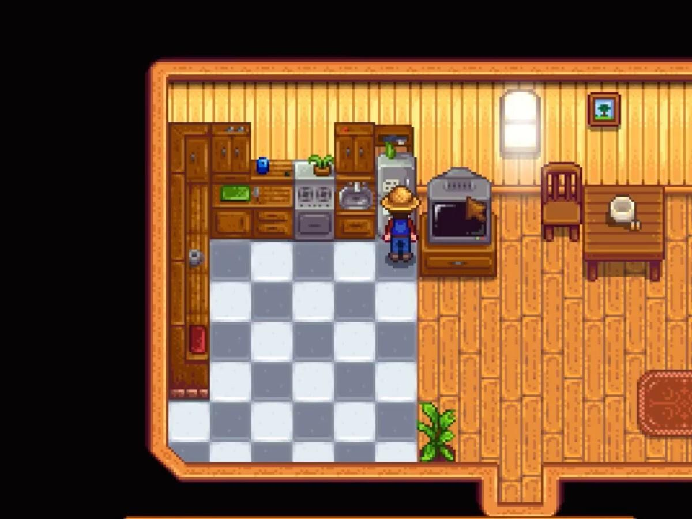
Cocina
Permite preparar recetas utilizando distintos ingredientes. Los platos pueden recuperar energía y salud, además de otorgar bonificaciones temporales.
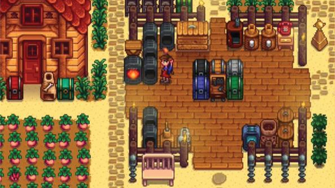
Fabricación
Consiste en crear objetos utilizando materiales obtenidos durante el juego. Se pueden fabricar máquinas, herramientas, muebles y otros elementos útiles para la granja.
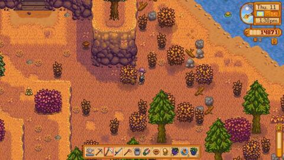
Recolección
Permite encontrar recursos naturales como flores, frutas silvestres, hongos y madera. Los objetos disponibles varían según la estación y la zona.